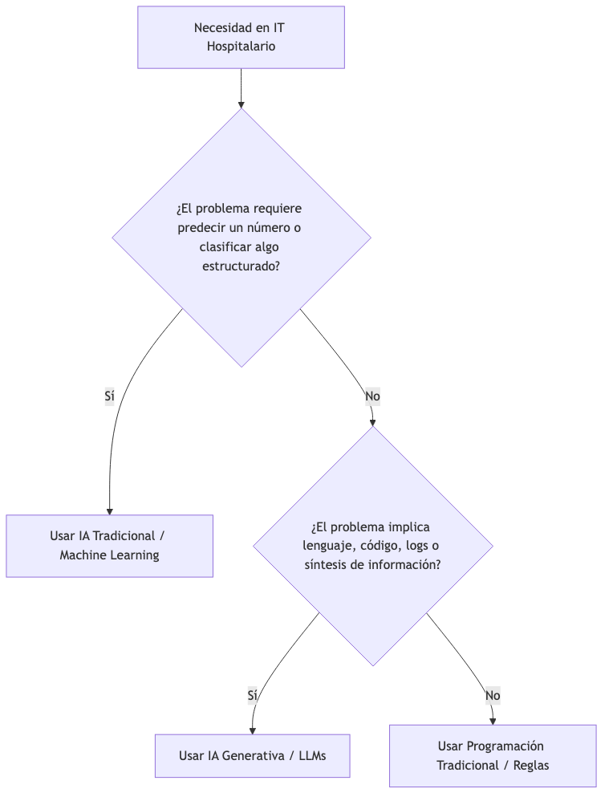
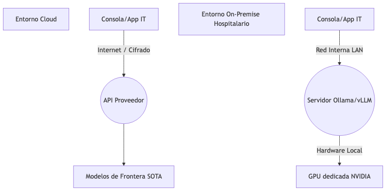
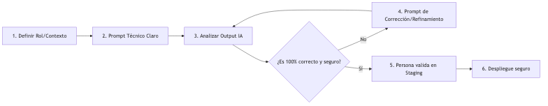

Resumen
Desde 2022, la inteligencia artificial generativa (GenAI) ha emergido como una tecnología disruptiva que está transformando la forma en que los departamentos de informática abordan sus desafíos diarios. Sus posibilidades ofrecen una nueva capa de interacción basada en lenguaje natural que permite a los profesionales técnicos automatizar tareas complejas, sintetizar información de manera eficiente y acelerar la resolución de problemas. Sin embargo, la adopción de esta tecnología también plantea importantes consideraciones en términos de privacidad, seguridad y gestión de riesgos, especialmente en un entorno tan crítico como el hospitalario. En este tutorial se presenta una visión general del impacto de la inteligencia artificial generativa (GenAI) en el ámbito de la informática. Se exploran los cambios de paradigma que esta tecnología introduce en la gestión de sistemas críticos, la automatización de tareas técnicas y el soporte a desarrolladores. Se comparan las capacidades de la IA tradicional con las de los modelos generativos basados en LLMs, destacando sus aplicaciones específicas en entornos hospitalarios. Además, se analiza la decisión estratégica entre soluciones en la nube y locales, y se presentan casos de uso concretos que ilustran cómo la GenAI puede transformar flujos de trabajo cotidianos en departamentos de IT hospitalarios. Finalmente, se discuten las mejores prácticas para su implementación segura y efectiva, así como los riesgos asociados a su uso inadecuado.
-
Comprender el impacto de la inteligencia artificial generativa en la informática en el contexto hospitalario.
-
Identificar las diferencias clave entre la IA tradicional y la IA generativa basada en LLM
-
Evaluar las ventajas y desventajas de soluciones en la nube frente a locales para aplicaciones de IA en el contexto de un departamento de informática en un hospital.
-
Explorar casos de uso concretos que demuestran el valor práctico de la GenAI en entornos hospitalarios.
-
Conocer las mejores prácticas para la implementación segura y efectiva de la inteligencia artificial generativa en departamentos de informática de un hospital.
1. El nuevo paradigma operativo en el IT Hospitalario
El entorno tecnológico de un hospital es un ecosistema complejo y crítico. Gestionar historias clínicas electrónicas (HCIS), asegurar la disponibilidad de sistemas críticos 24/7, cumplir con normativas estrictas de privacidad (RGPD) y lidiar con integraciones heredadas (HL7, FHIR, bases de datos institucionales) consume la mayor parte del tiempo de los departamentos de IT.
Tradicionalmente, la automatización en IT requiere programar de forma explícita cada caso de uso. La llegada de la Inteligencia Artificial Generativa (GenAI) cambia las reglas del juego: no viene a sustituir los sistemas existentes, sino a actuar como una nueva capa operativa basada en lenguaje natural capaz de razonar, estructurar y acelerar las tareas diarias del personal técnico.
1.1. ¿Qué ha cambiado realmente?
-
De buscar a sintetizar: Ya dedicamos el tiempo a navegar en una documentación interna de 500 páginas o foros obsoletos; la IA puede extraer la aguja en el pajar rápidamente.
-
Democratización del código: Perfiles de sistemas o soporte ahora pueden generar scripts de automatización complejos, mientras que los desarrolladores senior reducen drásticamente tareas repetitivas (boilerplate code).
|
Note
|
La IA se puede encargar ahora del scaffolding en situaciones como:
La clave es entender que la IA no es un reemplazo de los profesionales técnicos, sino una herramienta de amplificación de su capacidad. El conocimiento técnico sigue siendo esencial para guiar, validar y supervisar el trabajo de la IA, asegurando que las soluciones generadas sean seguras, eficientes y alineadas con las necesidades específicas del entorno hospitalario. |
-
Interfaz universal: El lenguaje natural se convierte en la API de control para orquestar flujos de trabajo técnicos.
|
Important
|
En un entorno hospitalario, la IA Generativa no toma decisiones autónomas ni interactúa directamente con datos de salud en abierto de forma descontrolada. Se implementa como un Copiloto bajo la estricta supervisión de una persona (Human-in-the-loop). |
2. Inteligencia artificial tradicional vs. Inteligencia artificial generativa
Es fundamental entender qué herramientas son adecuadas para cada problema. Confundir la inteligencia artificial predictiva (tradicional) con la inteligencia artificial generativa (actual) puede conducir a un proyecto fallido o a expectativas irreales.
2.1. Inteligencia artificial tradicional (Predictiva)
Diseñada para clasificar, detectar patrones estadísticos y predecir valores numéricos a partir de datos estructurados históricos. Responde a la pregunta: ¿Qué es esto? o ¿Qué pasará?
-
Ejemplo Hospitalario: Un sistema que analiza las constantes de pacientes en UCI para predecir el riesgo de sepsis 4 horas antes de que ocurra.
2.2. Inteligencia artificial generativa (basada en LLMs)
Diseñada para comprender el contexto, razonar sobre instrucciones complejas, resumir, transformar formatos y generar nuevo contenido (texto, código, consultas SQL, configuraciones). Responde a la pregunta: Ayúdame a hacer esto o Estructura esta información.
-
Ejemplo Hospitalario: Un asistente que toma un log caótico de errores del sistema que gestiona los ingresos, identifica el mensaje corrupto y genera el script Bash necesario para purgar la cola de mensajes bloqueados.
2.3. Tabla comparativa
| Característica | Inteligencia artificial tradicional | Inteligencia artificial generativa |
|---|---|---|
Salida principal |
Números, etiquetas, probabilidades, clasificaciones. |
Texto, código, resúmenes, datos estructurados (JSON/XML). |
Entrada requerida |
Tablas de datos limpias, variables predefinidas. |
Texto libre, logs, código, documentación técnica. |
Lógica interna |
Modelos matemáticos rígidos (Regresiones, XGBoost). |
Redes de Transformer que entienden el contexto secuencial. |
Modo de interacción |
Ejecución de código / Consumo de API técnica. |
Conversación interactiva / Prompt Engineering. |
Rol en el IT Hospitalario |
Diagnóstico por imagen, alertas clínicas, analítica predictiva de gestión de camas. |
Automatización documental, generación de scripts, soporte técnico rápido, copiloto de programación. |
2.4. Flujo de decisión tecnológica

3. Mapa del ecosistema de modelos actuales
No existe un único modelo que sirva para todo. La clave para un departamento IT es elegir el modelo en función del coste, la privacidad, la latencia y la capacidad de razonamiento requerida.
3.1. Modelos comerciales (Cloud / Propietarios)
3.1.1. ChatGPT (OpenAI - GPT-5.5)
-
Fortalezas: Máxima capacidad de razonamiento lógico general, excelente en el manejo de tareas lógicas complejas y APIs muy maduras para desarrollo.
-
Debilidades: Dependencia absoluta de la nube, costes variables por tokens y alta sensibilidad en el cumplimiento estricto de RGPD si se envían datos corporativos.
-
Uso típico: Orquestación de flujos de trabajo principales, generación de lógica compleja en desarrollo.
3.1.2. Claude (Anthropic - Claude Sonnet 4.6)
-
Fortalezas: El estándar actual para desarrollo de software, refactorización y escritura de documentación técnica limpia. Capacidad de seguir instrucciones milimétricamente.
-
Debilidades: Ventana de contexto costosa si se abusa de ella, menor ecosistema de plugins nativos que OpenAI.
-
Escenario recomendado: Herramienta de cabecera para desarrolladores IT y analistas de Business Intelligence (BI) que refactorizan código o estructuras SQL.
3.1.3. Gemini (Google - Gemini 3.1)
-
Fortalezas: Ventana de contexto masiva (hasta 2 millones de tokens). Permite adjuntar manuales enteros de sistemas hospitalarios, bases de datos de código completas o vídeos de errores en una sola sesión.
-
Debilidades: Respuestas a veces excesivamente creativas que requieren prompts muy acotados.
-
Escenario recomendado: Auditoría de documentación técnica masiva de aplicaciones heredadas o análisis conjunto de logs de servidores de varios días.
3.1.4. GitHub Copilot / Microsoft Copilot
-
Fortalezas: Integración nativa en el entorno de desarrollo (VS Code, Visual Studio) y herramientas de oficina (M365).
-
Debilidades: Caja negra; tienes poco control sobre qué contexto interno del código se está enviando a la nube de Microsoft si no se configura la versión Enterprise adecuadamente.
-
Escenario recomendado: Autocompletado diario de código y consultas SQL en tiempo real.
3.2. Modelos abiertos (Open Source / Locales)
3.2.1. Ecosistema Llama 4 (Meta), Mistral (Francia) y Phi-4 (Microsoft)
-
Fortalezas: Se pueden descargar, modificar y ejecutar dentro de la propia infraestructura del hospital (On-Premise). Privacidad del 100%, coste por uso cero (una vez amortizado el hardware).
-
Debilidades: Requieren hardware específico (GPUs empresariales) para dar servicio a múltiples usuarios concurrentes con modelos grandes.
-
Escenario recomendado: Procesamiento automatizado de tickets de soporte técnico internos, parseo de logs con datos de los sistemas de información internos, y asistentes locales para áreas críticas del hospital.
3.2.2. Ollama
-
¿Qué es?: La herramienta de facto para simplificar la ejecución de modelos open-source de forma local en máquinas de desarrollo o servidores IT. Actúa como un puente que facilita la descarga y configuración de modelos y expone una API local idéntica a la de OpenAI, lo que permite usar los mismos prompts y flujos de trabajo tanto para modelos comerciales como para modelos locales sin cambiar el código.
|
Tip
|
Se deja como trabajo autónomo la instalación de Ollama y algún modelo gratuito en un entorno local de laboratorio para realizar una prueba de concepto de generación de código o análisis de logs sin enviar datos a la nube. |
4. 4. El gran dilema: Cloud vs. On-Premise
La decisión de desplegar soluciones de Inteligencia Artificial en la nube frente a local no es solo una cuestión de preferencia técnica. En el ámbito de la salud, está fuertemente condicionada por la legislación y la seguridad de la información.

4.1. Matriz de decisión
| Dimensión de análisis | Modelos en la nube (Cloud) | Inferencia Local (On-Premise) |
|---|---|---|
Privacidad y RGPD |
Requiere acuerdos B2B específicos (BAAs) y pasarelas que anonimicen datos corporativos antes de salir del perímetro. |
Los datos nunca abandonan la red interna del hospital. Cumplimiento normativo nativo. |
Potencia y capacidad |
Modelos de frontera (State-of-the-Art). Respuestas de alta calidad conceptual de forma nativa. |
Modelos optimizados (hasta 70B de parámetros). Excelente rendimiento para tareas específicas de ingeniería de software y soporte. |
Coste Financiero |
OpEx (Pago por uso / consumo de tokens). Económico al inicio, potencialmente caro a escala masiva. |
CapEx (Inversión inicial en servidores con GPUs tipo NVIDIA). OpEx casi nulo. |
Latencia y Mantenimiento |
Depende de la conexión a internet. Cero mantenimiento de infraestructura de IA. |
Latencia predecible según la cola local de peticiones. Requiere administración de sistemas y monitorización de VRAM. |
4.2. Enfoque híbrido
Los departamentos IT eficientes no eligen un bando de forma exclusiva. Implementan una arquitectura híbrida:
-
Uso de Cloud (Entornos seguros): Para desarrollo de software, asistencia en la creación de dashboards de BI con datos ya agregados y generación de documentación técnica (donde no hay datos de pacientes implicados).
-
Uso de On-Premise (Local): Para flujos automatizados de tickets que tocan logs de servidores de producción, herramientas que analizan código fuente interno sensible o automatización de tareas administrativas donde figuran nombres de facultativos o pacientes.
5. Algunos casos de uso ilustrativos
A continuación, se detallan microcasos operativos e inmediatos que se podrían abordar de forma práctica a lo largo de este curso:
-
Documentación técnica acelerada: Generación automática de archivos README, diagramas Mermaid a partir de especificaciones y documentación de APIs legacy.
-
Soporte TI de nivel 1 y 2: Un motor local analiza los logs de errores comunes de impresoras de etiquetas de farmacia o caídas de terminales e indica al técnico de guardia los pasos exactos de resolución.
-
Generación y optimización SQL: Creación rápida de consultas complejas sobre esquemas relacionales de las bases de datos, optimización de JOINs que ralentizan el sistema y explicación en lenguaje natural de consultas heredadas incomprensibles.
-
Análisis de expresiones DAX para Power BI: Depuración de métricas temporales complejas en los cuadros de mando de control de admisiones o listas de espera.
-
Onboarding de personal técnico: Respuestas instantáneas a nuevos programadores o administradores sobre cómo configurar el entorno de desarrollo local basándose en el repositorio de procedimientos internos del hospital.
-
Consolidación y triaje de tickets: Clasificación automática de las incidencias del software de ticketing (Jira/Glpi) por categorías de criticidad reales del hospital (ej: "Error en dispensador" → Prioridad Alta).
-
FAQs dinámicas basadas en documentación interna: Creación de bots de consulta técnica internos sobre normativas de seguridad, políticas de contraseñas y accesos VPN.
-
Revisión de procedimientos e instrucciones de trabajo: Verificación de que una nueva guía técnica redactada por un administrador de sistemas cumple con los estándares ISO de seguridad de la información implantados en el centro.
6. Qué es lo que NO se debe hacer: Gestión de riesgos y "Líneas rojas"
El uso de la Inteligencia Artificial en entornos corporativos requiere madurez profesional. Estos son una serie de errores críticos que debemos evitar para no comprometer la seguridad, la privacidad o la integridad de los sistemas hospitalarios:
|
Warning
|
|
7. ¿Qué es realmente útil HOY? (Aterrizando expectativas)
Descartemos el futurismo exagerado de las noticias. En el día a día técnico de un hospital, la IA Generativa puede aportar valor real inmediato en cuatro áreas clave:
-
Copilotos de desarrollo y en Sistemas: Actúa como un compañero de programación que escribe el código aburrido (bloques try-catch, validación de formularios, configuración de contenedores Docker).
-
Traducción de lenguajes y formatos: Excelente para pasar una lógica escrita en un procedimiento antiguo en PL/SQL a un script moderno en Python, o para transformar un dump de logs caótico en un JSON perfectamente estructurado listo para ElasticSearch.
-
Refinamiento iterativo: La capacidad de darle una pieza de código o texto técnico propio y decirle: "Encuentra fallos de seguridad aquí" o "Optimiza este script Bash para que ocupe menos líneas".
-
Automatización cognitiva ligera: El procesamiento de lenguaje natural no estructurado que antes requería semanas de desarrollo de expresiones regulares (RegEx) imposibles de mantener, ahora se resuelve en minutos mediante prompts bien estructurados.
8. Un vistazo a los workflows de IA
Para maximizar el uso de los LLMs en las siguientes sesiones del curso, adoptaremos una metodología de trabajo basada en flujos iterativos profesionales. Dejaremos atrás el enfoque de "pregunta y respuesta simple" de un chat básico.
8.1. Componentes clave de un flujo profesional
-
Contexto persistente (System Prompts): Definir de manera fija el rol de la IA en la sesión. (Ej: "Actúas como un DBA Senior experto en PostgreSQL 15 enfocado en entornos médicos").
-
Refinamiento iterativo: Si la primera respuesta de la IA no es del todo exacta, no se descarta el chat. Se le guía corrigiendo el error (Ej: "Ese comando es correcto, pero recuerda que nuestro servidor corre sobre Red Hat, no Ubuntu; adapta la sintaxis").
-
IA + IA (Encadenamiento): Utilizar un modelo para generar una estructura inicial y un segundo modelo (o una sesión limpia) para actuar como revisor crítico del código generado.
8.2. Flujo Operativo del Curso

9. 9. Posibles escenarios
A continuación se presentan algunos escenarios cotidianos en un departamento de informática de un hospital y cómo la adopción de GenIA podría cambiar el resultado del flujo de trabajo.
9.1. Escenario A: Soporte técnico una mañana de lunes
-
El problema: El servicio de soporte amanece con 35 tickets acumulados debido a un cambio en el proxy de red corporativo. Los usuarios describen el fallo de formas totalmente distintas: "No me abre la historia clínica", "Da vueltas la pantalla", "El sistema no funciona en la planta 3".
-
El flujo con IA: El personal responsable del soporte copia los textos de los 35 tickets en una GenIA y le pide: "Agrupa estas incidencias por causa raíz probable y extrae los IDs de equipo afectados en formato de lista".
-
El resultado: En 15 segundos, la IA identifica que 32 de los 35 tickets están causados por el mismo error de resolución DNS en el proxy de la red de enfermería de la planta 3. El equipo aplica la solución de forma masiva en lugar de responder individualmente a ciegas durante horas.
9.2. Escenario B: La aplicación heredada (Legacy) sin documentación
-
El problema: Un desarrollador senior abandona el hospital. El desarrollador entrante hereda una aplicación crítica escrita en PHP 5.4 hace 10 años, sin una sola línea de comentarios, encargada de sincronizar agendas médicas con un servicio externo de citas. La aplicación está fallando intermitentemente.
-
El flujo con IA: El nuevo equipo de desarrollo toma el script principal de PHP y lo introduce en un entorno seguro de Claude junto con el log de errores recientes.
-
El resultado: La IA genera en segundos un desglose en lenguaje natural de la arquitectura del script, añade comentarios explicativos detallados en el propio código, e identifica un problema de desbordamiento de memoria causado por un bucle
whilemal cerrado que se activaba bajo ciertas condiciones de red.
9.3. Escenario C: Analistas de BI y la métrica interminable
-
El problema: Desde la Gerencia piden un nuevo cuadro de mando en Power BI que calcule la tasa de ocupación de camas cruzada con la estancia media del mes anterior, pero excluyendo los festivos locales. La analista de BI pasa horas intentando ajustar las funciones de inteligencia de tiempo en DAX sin éxito.
-
El flujo con IA: La analista abre su Copiloto de confianza, introduce el esquema simplificado de su tabla de calendario y la tabla de ingresos del hospital, y redacta su necesidad en lenguaje técnico estructurado.
-
El resultado: La IA genera la fórmula exacta utilizando
CALCULATE,FILTERyALLSELECTED, explicando línea a línea el por qué de la lógica. La analista comprende la estructura, realiza dos ajustes menores en los nombres de las columnas y el dashboard queda desplegado antes del mediodía.
9.4. Escenario D: Redacción acelerada de un proyecto técnico
-
El problema: El área de informática necesita presentar en 48 horas una memoria técnica para modernizar el sistema de gestión de turnos, incluyendo objetivos, alcance, riesgos, presupuesto preliminar y cronograma por fases. La información existe, pero está dispersa entre correos, notas sueltas y documentos antiguos.
-
El flujo con IA: El equipo recopila el material base y le pide a la GenIA: "Estructura este contenido como proyecto técnico formal para dirección: resumen ejecutivo, situación actual, propuesta, plan de implantación, indicadores de éxito y anexos". Después solicita una segunda iteración para adaptar el lenguaje a audiencia no técnica.
-
El resultado: En menos de una hora se obtiene un primer borrador completo, coherente y editable que reduce varios días de redacción manual. El equipo dedica el tiempo restante a validar cifras, ajustar prioridades y cerrar una propuesta de mayor calidad.
9.5. Escenario E: Valoración técnica de licitaciones
-
El problema: El hospital recibe varias ofertas para un nuevo sistema de integración clínica. Cada proveedor usa terminología distinta y documentos extensos, lo que dificulta comparar de forma homogénea criterios como interoperabilidad HL7/FHIR, ciberseguridad, soporte, plan de formación y coste total de propiedad.
-
El flujo con IA: La comisión de valoración define una matriz de evaluación con pesos y solicita a la IA: "Analiza estas propuestas y puntúa cada criterio con evidencia textual, marcando ambigüedades, riesgos contractuales y preguntas de aclaración para los licitadores".
-
El resultado: La IA genera una tabla comparativa trazable, identifica omisiones críticas (por ejemplo, ausencia de SLA 24/7 o alcance incompleto de migración de datos) y prepara un listado de preguntas objetivas para la mesa de contratación. La decisión final sigue siendo humana, pero con una base mucho más sólida y auditable.
9.6. Escenario F: Mejora de arquitectura de una aplicación crítica
-
El problema: Una aplicación monolítica que gestiona peticiones internas presenta degradación de rendimiento y fallos en picos de carga. Existe presión para "migrar rápido" a una arquitectura moderna, pero sin romper servicios ya en producción.
-
El flujo con IA: Antes de proponer cambios, el equipo solicita a la IA un plan en tres etapas: "1) Diseñar estrategia de testing de regresión y contratos para asegurar comportamiento actual; 2) Definir plan de migración incremental con hitos, rollback y criterios de salida; 3) Proponer arquitectura objetivo (por dominios, APIs, observabilidad, seguridad y despliegue)". A continuación, la IA ayuda a generar casos de prueba, backlog técnico priorizado y un roadmap por iteraciones.
-
El resultado: El equipo establece primero una red de seguridad de tests automatizados, luego ejecuta una migración por fases con riesgo controlado y finalmente evoluciona hacia una arquitectura más mantenible y escalable. La IA acelera el análisis y la documentación, mientras la validación técnica y la gobernanza de cambios permanecen en manos del equipo responsable.
10. Conclusiones
La Inteligencia artificial generativa no es una moda pasajera, sino una herramienta de transformación profunda para los departamentos de informática hospitalaria. Su capacidad para entender el lenguaje técnico, generar código, sintetizar información y actuar como copiloto de desarrollo tiene el potencial de liberar a los profesionales técnicos de tareas repetitivas, acelerar la resolución de problemas y mejorar la calidad de las soluciones implementadas. Sin embargo, su adopción requiere una gestión cuidadosa de riesgos, una comprensión clara de sus fortalezas y limitaciones, y un enfoque profesional basado en flujos iterativos de validación humana. La clave para el éxito no es elegir entre Cloud u On-Premise, sino diseñar una arquitectura híbrida que aproveche lo mejor de ambos mundos según las necesidades específicas del hospital.